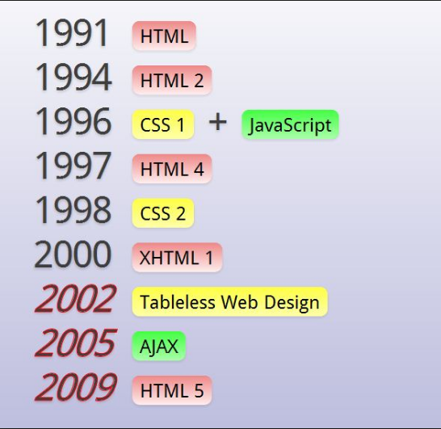
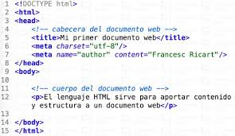
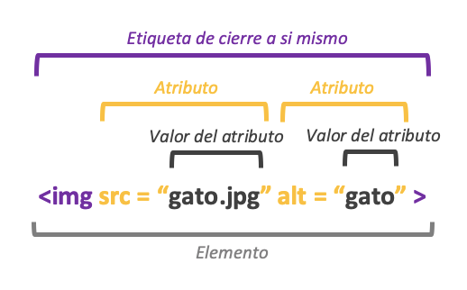
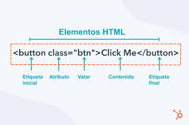
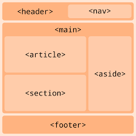

Introducción a HTML
HTML (HyperText Markup Language) es el lenguaje de marcado estándar utilizado para crear y estructurar
contenido en la web. A continuación,
se presenta un índice con los temas principales que se cubrirán en
este tutorial de HTML:
- Que es HTML?
- Historia HTML.
- Editores de HTML.
- Tu primer documento HTML>
- Que son etiquetas en HTML
- Que son atributos en HTML
- Reglas fundamentales en HTML.
- Etiquetas para hacer un documento HTML.
Puedes escuchar nuestro contenido mientras realizas otras tareas

Que es HTML?
HTML son las siglas de HyperText Markup Language o Lenguaje de Marcado de Hipertexto. Es el lenguaje estándar utilizado para creary estructurar el contenido de las páginas web, definiendo elementos como textos, imágenes, enlaces y tablas a través de etiquetas. Los navegadores web interpretan este código para mostrar al usuario la estructura organizada de un sitio web.

Historia HTML.
HTML, o lenguaje de marcado de hipertexto, fue inventado por Tim Berners-Lee en 1980 para compartir documentos y crear la World Wide Web. La primera versión oficial, HTML 1.0, se publicó en 1991. Desde entonces, el lenguaje ha evolucionado a través de versiones como HTML 2.0 (1995) y HTML 4.0 (1997), que introdujo la separación de contenido y presentación (CSS), hasta la versión actual, HTML5 (lanzada en 2014), que incorpora soporte multimedia etiquetas semánticas avanzadas y mejoras para aplicaciones web complejas.
Editores de HTML.
Existen varios editores de HTML disponibles, tanto gratuitos como de pago. Algunos de los editores más populares incluyen Visual Studio Code, Sublime Text, Atom, Notepad++, Adobe Dreamweaver y Brackets.Estos editores ofrecen características como resaltado de sintaxis, autocompletado de código, vista previa en tiempo real y herramientas de depuración que facilitan la creación y edición de archivos HTML.

Tu primer documento HTML
En este apartado del tutorial se explica cuál es la estructura básica de un documento HTML a través de un ejemplo sencillo ("dos-parrafos.html") donde se visualizan dos párrafos. Un documento HTML contiene marcas (etiquetas), las cuales se escriben empleando los caracteres menor que "<", mayor que ">" y barra inclinada "/". Dentro del elemento "html", es decir, entre <html> y </html>, se debe escribir el elemento "head" que, como iremos viendo a lo largo del tutorial, puede contener diversa información sobre el documento:
Que son etiquetas en HTML
Las etiquetas HTML son fragmentos de código que se utilizan para estructurar y dar formato al contenido de una página web, indicando al navegador cómo debe mostrar los elementos. Generalmente vienen en pares: una etiqueta de apertura y una de cierre <apertura> y </cierre>, dentro de los simbolos <> , que delimitan el contenido que se va a manipular. Sirven para crear títulos, párrafos, enlaces, imágenes, formularios y para organizar la jerarquía del contenido.

Que son atributos en HTML
Los atributos en HTML son propiedades adicionales que se pueden agregar a las etiquetas para proporcionar información adicional o modificar su comportamiento. Los atributos se colocan dentro de la etiqueta de apertura y generalmente vienen en pares de nombre y valor. Por ejemplo, el atributo href en la etiqueta <a> se utiliza para especificar la URL del enlace. Otros atributos comunes incluyen src para imágenes, alt para texto alternativo, class para definir clases CSS y id para identificar elementos únicos.

Reglas fundamentales en HTML.
Los atributos en HTML son valores adicionales que se colocan dentro de la etiqueta de apertura de un elemento para configurar su comportamiento o proporcionar información sobre él, como puede ser el destino de un enlace <href>, el texto alternativo de una imagen <alt> o su fuente <src>. Estos atributos proporcionan funcionalidad extra, modifican el comportamiento por defecto o cumplen con criterios específicos del elemento.

Etiquetas para hacer un documento HTML.
Para hacer un documento HTML, se utilizan etiquetas básicas como todas dentro de los signos <> como los siguientes: <!DOCTYPE>, <html>, <head> y <body> para la estructura general, y dentro del <body> se incluyen etiquetas para el contenido visible como títulos que van del <h1-h6>, párrafos <p>, enlaces <a>, y para el formato del texto como negrita <b>, cursiva <i>, y subrayado <u>.